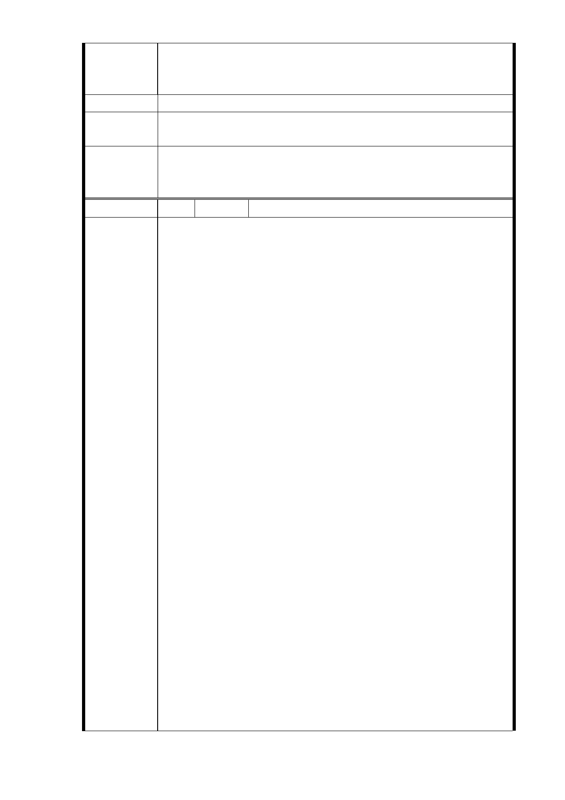

發強烈抗爭，敬請 明察。
台北市信義區安康里松台公寓四五十戶弱勢住戶
發文代表人 黃奇元
建議辦法
市府回應
意見
同編號 3 研析意見。
一、R04 站北側捷一用地，採設置捷運必要設施出入口最小
委員會決議
用地面積 510 ㎡之替代方案取得用地，並辦理土地開發。
二、同「市府回應意見」。
編 號 5 陳情人 吳陳梅麗（R04 捷一）
主旨：為「配合台北市捷運信義線東延段工程變更住宅區為
土地開發區（捷）主要計畫案」及「擬定台北市捷運
信義線東延段工程土地開發區（捷）暨劃定都市更新
地區細部計畫案」一事，爰向鈞院陳情：
附件：1.最高法院判決書影本乙份 2. 88-100 年地價稅繳
款書影本乙份
說明：
一、查該坐落於台北市松山區永春段二小段第 153、第 156
號、184 號、204 號、208 號、 209 號、 210 號、214
號、215 號、216 號、219 號 220 號、222 號、223 號、
226 號、、227 號、227-2 號土地之房屋，係民國五十
六年間陳情人向建商彭燦堂承購公寓之所在地，該批公
寓共計九十餘戶，及十三名地主，約定由地主出地，建
商出資合建，然未及完工部分，建商即倒閉，地主允諾
陳情理由
由承購戶自行出資將所有建物完工後即可辦理土地分割
及過戶。惟陳情人及所有承購戶依約支付建築費用後，
部分地主卻因為地價上漲遂而反悔，拒不過戶。
二、之後於民國七十年間，該地號上之地主嗣後向台灣台北
地方法院提出不當得利之訴訟，要求陳情人及其他承購
住戶，必須支付不當得利之租金，該案件興訟多年法院
判決陳情人及其他承購住戶，有合法佔用土地之權利，
唯今地主一再推託、刁難致拖延至今，陳情人並非無權
佔用之違建戶，係有法源可以合法居住。此特說明如上。
三、陳情人自住入該屋後，每年按時繳納房屋稅，之後民國
八十八年間，陳情人又接獲台北市稅捐稽徵處信義分處
寄發有關台北市永春段二小段 0216-0000 地號，地主為
陳淑惠之地價稅繳款書乙份，該稅捐單位即將地主之名
下供車行使用之一般地價稅由二、三、四樓分攤，陳情
人僅為自住之住戶，又怎麼能課以一般稅率，陳情人當
時陳情多次，亦無果效，只好繳納地價稅至今已二十餘
- 22 -